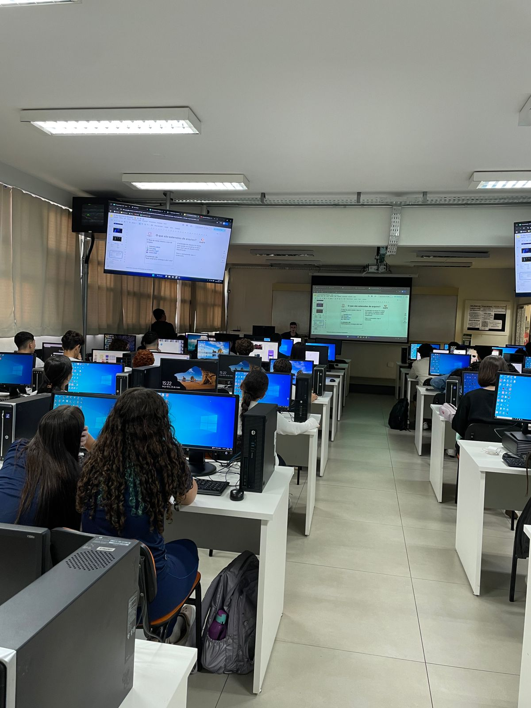

Relatório – 3ª Aula
Data: 26/05/2026
Turma: A
Instrutor:Victor
Relatório – Hardware Básico e atalhos de teclado
Na aula de hoje foi introduzido os conceitos básicos da computação, o instrutor começou a aula falando sobre arquitetura de computadores, foi apresentado aos alunos a diferença entre hardware e software, ele também mostrou como é um computador e seus respectivos componentes: Placa-mãe, CPU, RAM, HD, SSD. Após isso, foi apresentado outro conteúdo, os atalhos do Windows, os alunos conheceram atalhos como Ctrl+C, Ctrl+V, Ctrl+Z, Ctrl+X, Alt+Tab, entre muitos outros. Em seguida, fizemos um kahoot sobre hardware e suas funções.
No fim da aula, os outros instrutores apareceram com alguns experimentos para os alunos. O primeiro experimento foi bem simples, apenas ligaram um transformador na tomada e uma fan de pc para ver a voltagem necessária para ligar a fan, após isso ligaram uma lâmpada led e foram mostrando que cada perninha tem uma cor diferente, e que a voltagem também altera essa cor. Por fim, mostraram na prática o efeito joule, que é o efeito de aquecimento causado pela passagem de corrente elétrica em um condutor transformando energia em calor, e para isso, eles usaram um pedaço de esponja de aço ligado a um circuito do transformador e o fio começou a esquentar, mostrando o efeito joule na prática.
